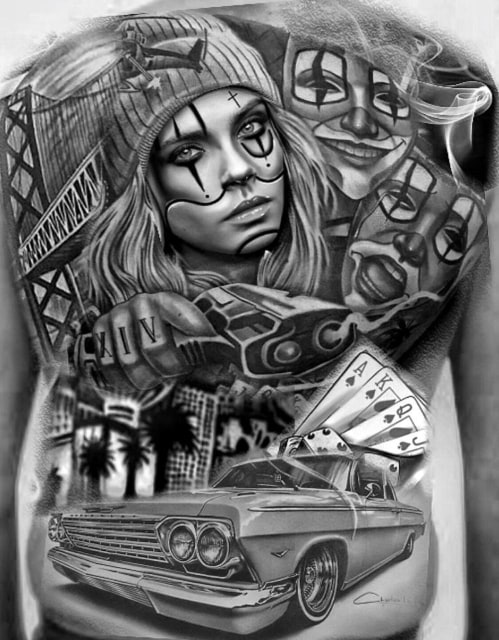
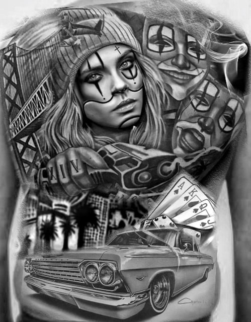

GET THE FRESHEST OF INK
Artful ink regularly invites some of the best tattoo artists from around the world. Have a look at some of the guest artists who will be coming to join us. Expect the same exceptional
service from each of our guest artists.

Artful ink regularly invites some of the best tattoo artists from around the world. Have a look at some of the guest artists who will be coming to join us. Expect the same exceptional
service from each of our guest artists.
|
- TATTOOS - |
- HYGIENE - |
- VIDEOS - |
 With a focus on custom work, the artists at Freshest Ink — Bali Tattoo Studio like to define themselves as speciality tattoo studio, specialising in large tattoos such as sleeves, full chest and back tattoos. Whether it is something brand new, a re-creation or a cover-up, we have specialised artists that are just right for the job.
With a focus on custom work, the artists at Freshest Ink — Bali Tattoo Studio like to define themselves as speciality tattoo studio, specialising in large tattoos such as sleeves, full chest and back tattoos. Whether it is something brand new, a re-creation or a cover-up, we have specialised artists that are just right for the job.


 

© 2019 Freshest ink - Bali tattoo studio. All rights reserved.